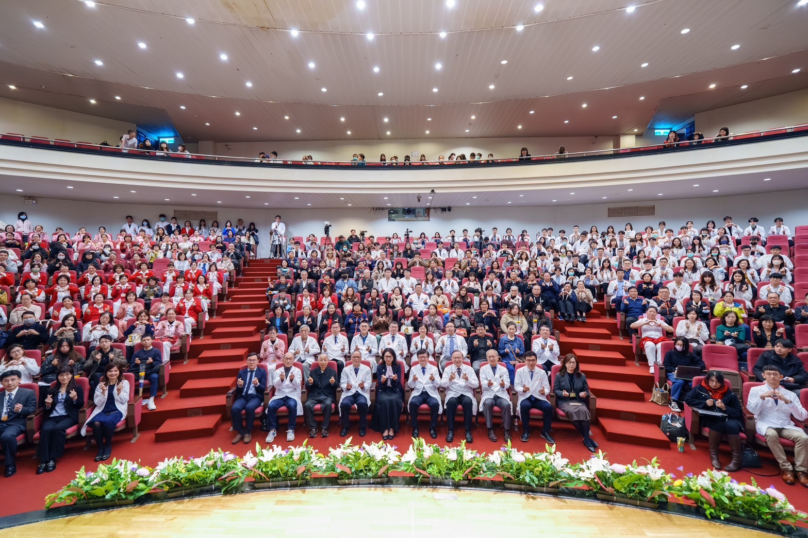

八仙塵爆十週年紀念暨莊秀樹醫師追思會
八仙塵爆事件屆滿十週年，為回顧這段重要的醫療歷程，並向當年全力投入救治與後續照護的醫療團隊致敬， 林口長庚醫院於1月27日舉辦「八仙塵爆十週年紀念暨莊秀樹醫師追思會」。 活動以『感恩、希望、前行』為主軸，邀請曾參與急性救治與重建照護的醫師、護理師、 返院支援的整形外科系友，以及一路攜手走過復原之路的傷友與家屬齊聚一堂，在回顧中彼此問候，也在重逢中看見重生的力量。
關鍵醫療數據
出席貴賓
- 健保署陳亮妤署長
- 長庚醫療公益發展委員會陳昱瑞主席
- 長庚決策委員會程文俊主任委員
- 長庚決策委員會陳建宗副主任委員
- 林口長庚外科部林有德部長
- 整形外科系林承弘系主任
- 一般整形外科顏琤嬑主任
- 林口長庚前灼傷中心主任楊瑞永
- 臺灣燒傷暨傷口照護學會理事長吳思賢
第一線全力搶救：撐起最艱困的時刻
陳昱瑞名譽主任委員表示，八仙塵爆造成大量重度燒燙傷患者湧入，林口長庚在四小時內接收了四十餘位傷患， 平均燒傷面積高達體表面積50%，院內第一時間成立應變指揮中心，動員大量人力與醫療資源， 並由整形外科承擔燒燙傷急性處置與後續重建醫療的核心任務。
陳建宗副主任委員進一步指出，事故發生後兩週內，整形外科更全面暫停所有常規手術，集中量能投入救治。 在急性期共執行超過200多台手術，每一位病患平均經歷了5.6次的清創與植皮。 即便長庚擁有全台最多的燒燙傷床位，仍一度滿床溢出，必須啟用顯微重建加護病房分級支援，醫療量能承受極大考驗與壓力。
系友回娘家支援：病患全數順利出院
「當時人力十分吃緊，許多退休的護理師與早已在坊間執業、名聲響亮的整形外科系系友， 一接到消息，二話不說便排開自家的自費手術，列出班表，『回娘家』支援手術與照護。 在醫療團隊日以繼夜的努力守護下，至同年年底，包括他院轉入共五十餘位的病患， 幾乎全數順利出院，達成95%以上的存活率，寫下驚人的醫療紀錄。」
— 外科部林有德部長
從存活到復原：漫長卻不孤單的路
林口長庚前灼傷中心主任楊瑞永醫師指出，急性期後，整形外科在後續重建階段持續扮演關鍵角色。照護範圍涵蓋：
- 傷口處置
- 疤痕照護
- 植皮與皮瓣重建
- 關節攣縮預防與矯正
- 功能重建及長期追蹤
2015年12月於桃園長庚開設的「燒燙傷門診治療中心」，結合整形外科、復健科、及精神科三大專科， 聯合評估燒燙傷患者並提供個別化及最佳化的治療，陪伴超過百位傷友走過漫長的復健之路。 楊醫師認為，醫療團隊不只治療傷口，更陪伴病友一步步從存活走向復原，幫助他們逐漸找回自信，重返家庭、職場與社會角色。
十年艱辛復原路：感念長庚團隊一路陪伴
本次活動共有傷友及家屬50餘位參加。八仙塵爆傷友夏文玲及鍾博宇說， 這一路走來，真正艱辛的不只是事故當下，還有漫長的復原過程。歷經了多次手術、反覆復健與心理調適， 從臥床到重新站立，每一步都充滿挑戰。雖然復原之路漫長，卻從未感到孤單， 因為長庚醫療團隊始終在旁陪伴，細心調整治療計畫，傾聽需求，給予身體與心理上的支持。
傷友林思佳也指出，當初的傷口已逐漸癒合，功能逐漸恢復，生活重新找回節奏。 有許多傷友也和他一樣能重返日常生活，甚至重組家庭、迎接新成員。回顧這段歷程，心中只有更多的感謝與珍惜， 期盼以自身經驗鼓勵仍在復原路上的夥伴，持續向前。
追思良醫：醫者精神長存
活動中特別安排隆重溫馨的追思儀式，緬懷去年12月辭世的整形外科莊秀樹醫師。 整形外科系林承弘主任表示，莊醫師生前長年投入重度燒燙傷與重建醫療，在八仙塵爆發生後， 親自帶領團隊承擔第一線急性救治與後續重建重任。面對高難度的重建手術，他始終親力親為， 以一次性疤痕切除放鬆與全層植皮移植，協助病友改善嚴重攣縮，恢復肢體功能。 多位病友感念，正是莊醫師與醫療團隊的堅持和付出，才讓他們得以重新擁抱新生。
把感恩化為前行的力量
曾經歷火吻的藝人Selina（任家萱），也特別拍攝一段影片感謝莊醫師及醫療團隊，並把祝福送給所有傷友。 Selina表示，當年她在林口長庚接受治療時，醫療團隊不僅全力照顧身體的復原，更在漫長的復健過程中，給予極大的支持與陪伴。 她感謝醫護人員多年來始終如一的守護，也向所有八仙塵爆傷友致上最深的敬意。
她認為每一位努力復原、勇敢回到生活的人，都是令人敬佩的榜樣， 也期盼這份來自醫療與病友之間的信任與力量，能持續轉化為前行的動力，陪伴更多人走過傷後復原之路。
整形外科：重視功能與生活重建的醫療精神
林承弘主任表示，十週年紀念活動不只是回顧與追思，更是對醫療使命的再確認。 希望持續彰顯整形外科在重大災難醫療與長期重建中的關鍵角色， 並延續以病人為中心、重視功能與生活重建的醫療精神，成為未來面對重大公共事件的重要經驗與基石。